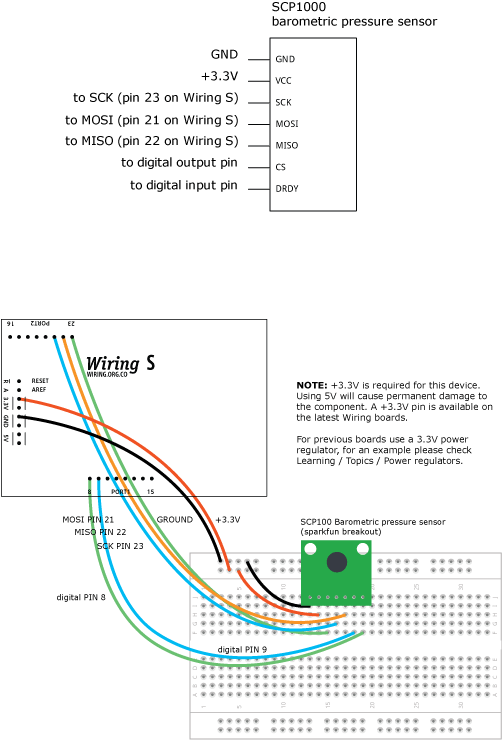

|


This example is for Wiring version 1.0 build 0100+. If you have a previous version, use the examples included with your software. If you see any errors or have comments, please let us know.
SCP1000 Barometric Pressure Sensor Display by Tom Igoe
Shows the output of a Barometric Pressure Sensor on a Uses the SPI library. For details on the sensor, see: http://www.sparkfun.com/commerce/product_info.php?products_id=8161 http://www.vti.fi/en/support/obsolete_products/pressure_sensors/ This sketch adapted from Nathan Seidle's SCP1000 example for PIC: http://www.sparkfun.com/datasheets/Sensors/SCP1000-Testing.zip
Shows the output of a Barometric Pressure Sensor on a Uses the SPI library. For details on the sensor, see: http://www.sparkfun.com/commerce/product_info.php?products_id=8161 http://www.vti.fi/en/support/obsolete_products/pressure_sensors/ This sketch adapted from Nathan Seidle's SCP1000 example for PIC: http://www.sparkfun.com/datasheets/Sensors/SCP1000-Testing.zip

// the sensor communicates using SPI, so include the library: #include <SPI.h> //Sensor's memory register addresses: const int PRESSURE = 0x1F; //3 most significant bits of pressure const int PRESSURE_LSB = 0x20; //16 least significant bits of pressure const int TEMPERATURE = 0x21; //16 bit temperature reading const byte READ = 0b11111100; // SCP1000's read command const byte WRITE = 0b00000010; // SCP1000's write command // pins used for the connection with the sensor // the other you need are controlled by the SPI library): const int dataReadyPin = 8; const int chipSelectPin = 9; void setup() { Serial.begin(9600); // start the SPI library: SPI.begin(); // initalize the data ready and chip select pins: pinMode(dataReadyPin, INPUT); pinMode(chipSelectPin, OUTPUT); //Configure SCP1000 for low noise configuration: writeRegister(0x02, 0x2D); writeRegister(0x01, 0x03); writeRegister(0x03, 0x02); // give the sensor time to set up: delay(100); } void loop() { //Select High Resolution Mode writeRegister(0x03, 0x0A); // don't do anything until the data ready pin is high: if (digitalRead(dataReadyPin) == HIGH) { //Read the temperature data int tempData = readRegister(0x21, 2); // convert the temperature to celsius and display it: float realTemp = (float)tempData / 20.0; Serial.print("Temp[C]="); Serial.print(realTemp); //Read the pressure data highest 3 bits: byte pressure_data_high = readRegister(0x1F, 1); pressure_data_high &= 0b00000111; //you only needs bits 2 to 0 //Read the pressure data lower 16 bits: unsigned int pressure_data_low = readRegister(0x20, 2); //combine the two parts into one 19-bit number: long pressure = ((pressure_data_high << 16) | pressure_data_low)/4; // display the temperature: Serial.println("\tPressure [Pa]=" + String(pressure)); } } //Read from or write to register from the SCP1000: unsigned int readRegister(byte thisRegister, int bytesToRead ) { byte inByte = 0; // incoming byte from the SPI unsigned int result = 0; // result to return Serial.print(thisRegister, BIN); Serial.print("\t"); // SCP1000 expects the register name in the upper 6 bits // of the byte. So shift the bits left by two bits: thisRegister = thisRegister << 2; // now combine the address and the command into one byte byte dataToSend = thisRegister & READ; Serial.println(thisRegister, BIN); // take the chip select low to select the device: digitalWrite(chipSelectPin, LOW); // send the device the register you want to read: SPI.transfer(dataToSend); // send a value of 0 to read the first byte returned: result = SPI.transfer(0x00); // decrement the number of bytes left to read: bytesToRead--; // if you still have another byte to read: if (bytesToRead > 0) { // shift the first byte left, then get the second byte: result = result << 8; inByte = SPI.transfer(0x00); // combine the byte you just got with the previous one: result = result | inByte; // decrement the number of bytes left to read: bytesToRead--; } // take the chip select high to de-select: digitalWrite(chipSelectPin, HIGH); // return the result: return(result); } //Sends a write command to SCP1000 void writeRegister(byte thisRegister, byte thisValue) { // SCP1000 expects the register address in the upper 6 bits // of the byte. So shift the bits left by two bits: thisRegister = thisRegister << 2; // now combine the register address and the command into one byte: byte dataToSend = thisRegister | WRITE; // take the chip select low to select the device: digitalWrite(chipSelectPin, LOW); SPI.transfer(dataToSend); //Send register location SPI.transfer(thisValue); //Send value to record into register // take the chip select high to de-select: digitalWrite(chipSelectPin, HIGH); }